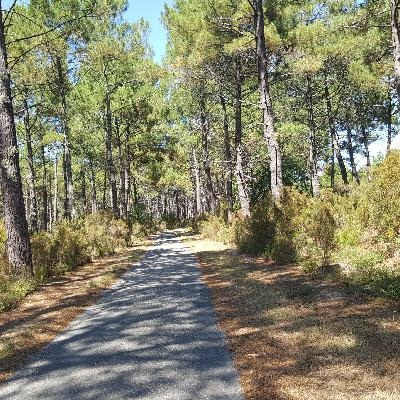
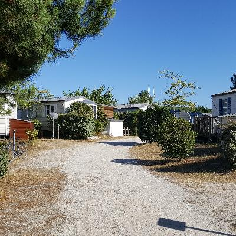
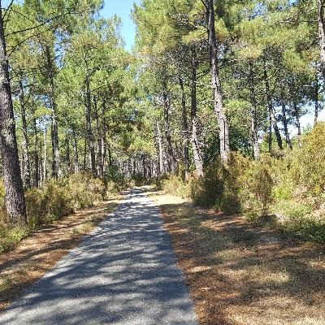
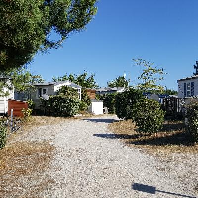

I've gone too far, too fast; time to slow down.
Yikes! There's a bigger difference between the straight-line distance and the distance traveled than I thought! I've found that it's easier if I make reservations for my accommodations a couple of days in advance, but this also means I have to figure out how far I'll want to go. This turns out to be a bit trickier than I thought.
By the time I post this, I should be near Royan, which is here:
To Agen
After the pigeonnier, I went to a place called Agen, where a lovely couple named Max and Martine let me stay with them. This was arranged through a British-originated website called “warmshowers,” which is a little like couchsurfing. It was nice to have dinner with Max and Martine, and hear about Max's time in Senegal. Unfortunately, it's a little labor-intensive to line up accomodations on Warmshowers – the web infrastructure isn't so good, and a lot of people who are listed as “available” aren't.
Anyway, here are a bunch of pictures of the ride. Hopefully I'll get a picture of Max, Martine and me in the e-mail that I can put here, too.


Growing Raisins
The next day, I went to a chambre d'hôte (like a B&B, but not always with breakfast). It was just above La Réole, by which I mean 5km uphill. It turns out it was a vineyard, hosted by Regine and her husband. They offered a “small aperitif” to me and the two other guests, which somehow consisted of crémant (sparkling wine), salad, onion tart, rosé wine, ham and bread, cheese, coffee and cognac over the course of two hours. It also included the French sport of dinner conversation.
One of the guests, a Parisian who I assume was there to buy wine, said of the crémant “it's not so bad, this thing here” (c'est pas mal, ton truc). This generated a heated reply as to the superiority of Bordeau crémant as compared to Champaigne, ending with the Parisian guy saying “that's why I say it's not so bad, this thing here.” Looking at him, Regine asked me if we had a word in English for someone who's really annoying. “Yes,” I replied. “We call them Parisian.”
This was all on a vineyard, with grapes growing all around us. I was able to contribute, “What is it you're growing in your little garden here? Raisins?” (raisins secs in French). “Of course, in California we'd make wine; do you guys do that here, too?” It's important for everyone at the table to contribute to the verbal jousting. We also spent a fair amount of time talking about the kids today. The kids today! I tells ya.
They start training young for verbal combat. The next morning, a little girl in the family said “my cousin is being mean!” “Oh?” “And he used a bad word!” “What did he say?” “He said I was chiante” (annoying, but literally, excratory). “Was he correct?” “No, I'm not chiante.” “Well, that's good, then.”
I really hate asking to take pictures in moments like this, but the first picture is of that dinner. It got kind of dark. I put my cellphone light under the cognac bottle in the “système Burkiabè” - in Burkina Faso, I learned that you can make a nice table light by putting a cellphone flashlight under a water bottle. It works even better with cognac!
¡Ay Dios Mios!
Next, I went to Mios, which is just inland from Arcachon Bay - that's where my path joins the coast. I thought it was going to be about a 70km ride, total. Around noon, when I got to the part that's a converted railroad right of way, I saw a sign telling me I had 70.5 km to go. Oops! I think that made it over 100km (60 mi) that day. With the loaded Winnebago I'm riding, that's too far – I got to the place I had lined up at 7 PM, totally dead tired.
I got a room in a new house in a housing development, with Mélanie, Edouard, their kids and their dog. It was lovely. They are on Sarah Bernhardt street, but the city hasn't put up the street sign yet – after all, they've only been there two years! There's a gigantic E. LeClerc nearby, which is pretty much a Walmart, only with a HUGE wine area. Huge, I say.
Mélanie offered me dinner with the family, which was absolutely wonderful! I was totally ready to ride my bike the 2km to the E. Leclerc nearby, but talking to them was much nicer. Edouard is hoping to work in Toronto (in aviation) at some point – apparently, the aviation standards in Canada and France are closer than with the US. Of course, there's the small matter of their two kids, and the new house!
Camping

 



OK, so that's what a French “campground” is like. It has a bar, and a little snack restaurant. There are tents and campsites, but there are also mobile homes (named “O'hara”), and I saw someone using a moving van to move out of theirs. I think people go there and live for weeks or a month during the summer. My half a campsite for one night was €20, which was a special lower price for bicyclists. I was lulled to sleep by the sound of two competing discos in the distance. Back to nature it wasn't.
On to Royan
Saint-Georges-de-Didonne, actually, which is a bit south-east. It's a beach community, and seems fine. I'll be here for two nights, so I can recuperate a bit. So far, all I've seen is this water, and the beer in the second-to-last picture; dinner soon :-) I can' t get into my place until 8, and I got here at 5, so I've been able to catch up on my interwebs. I also got my phone set up so mobile data works. Yay!
I think it was about 80km from the campgroud to here, plus a short ferry ride. A lot of it was on a wonderful road that had been closed to cars. I made much better time on that than on the purpose-built bicycle paths. Those are narrow and kind of bumpy.
Royan is the place with the big orange X in the map on the last picture. the place with the big orange X in the map on the last picture.

Dinner
As to dinner, this is what thirty bucks will get you in Saint-Georges-de-Didonne. I've been dreaming of steak n' fries (steak pommes frites) for about 150 km now :-) This little brasserie was absolutely wonderful. True to the stereotype, things get friendlier once you get out of the Bordeaux area. I'll note that my hosts the other night, Mélanie and Edouard, weren't from Bordeaux. Indeed, they mentioned that it was hard to integrate in the area, because people are a bit standoffish. Come to think of it, the owner of the vineyard the night before was originally from Alsace…
I think I'll sleep in tomorrow.